Ce scrie medicul pe certificat, luni la 07:40?
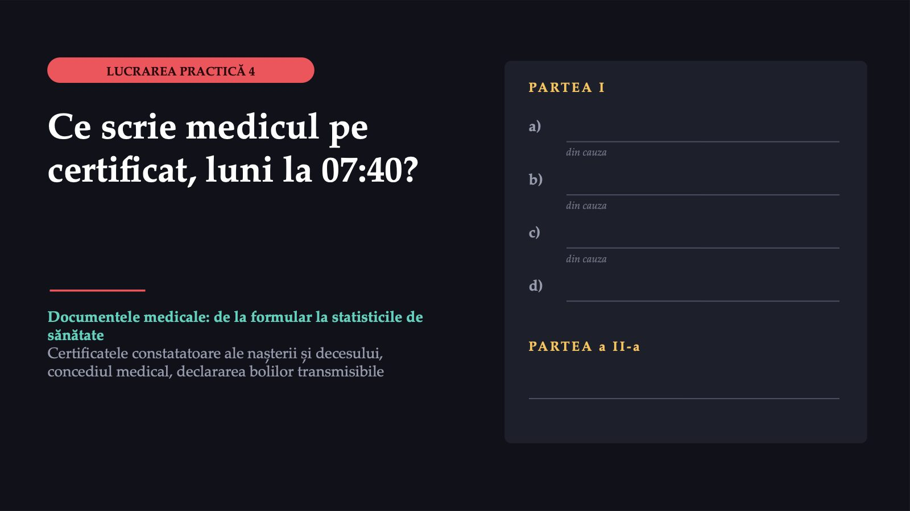
1 / 35Un deces la domiciliu, luni dimineață
![ACTUL 1 · SITUAȚIA CAZ CONSTRUIT Un deces la domiciliu, luni dimineață Luni, 07:40 comuna C, Județul B Pacient de 78 de ani 1 Mort cu o oră înainte, în prezența fiicei. Fără semne de violență. 2 Diabet zaharat de tip 2, boală cronică de rinichi, cardiopatie ischemică cu infarct vechi. 3 Acum două săptămâni: dispnee la efort, edeme; medicul notase insuficiență cardiacă. 4 În ultimele zile respira numai în șezut. Familia cere certificatul. Caz construit pentru curs; detaliile sunt plauzibile, nu reale.](diapozitive/LP04/002.jpg) 2 / 35
2 / 35Ce scrie medicul în partea I a certificatului?
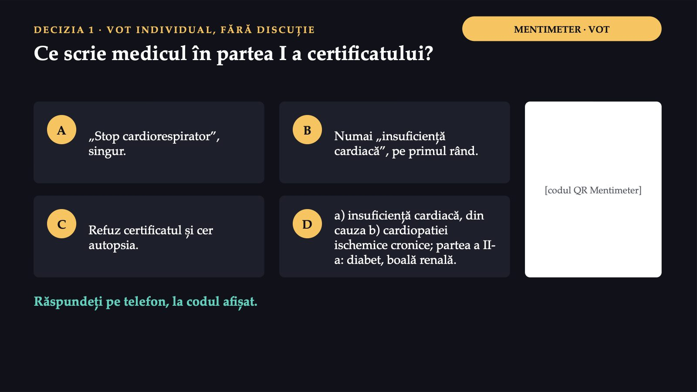
3 / 35Convingeți-l pe cel care a votat altfel. Apoi votați din nou.
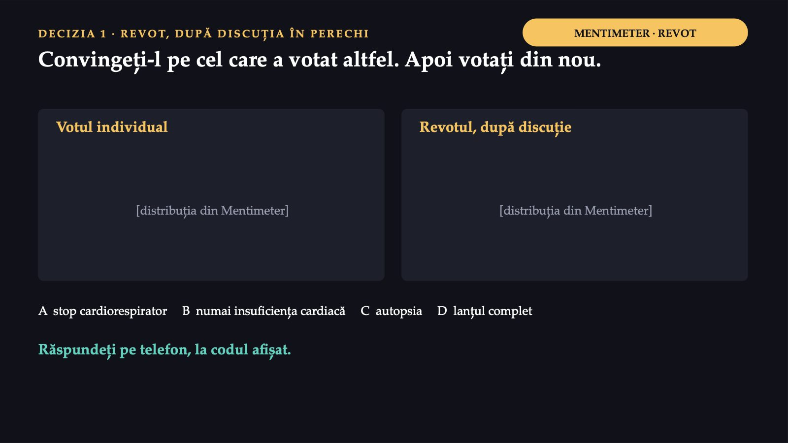
4 / 35Cine scrie certificatul și în cât timp
![LEGEA NR. 119/1996 · ACTELE DE STARE CIVILĂ Cine scrie certificatul și în cât timp Cine Medicul care a făcut constatarea. Consemnează cauza decesului și data decesului. În cât timp Declararea decesului: în 3 zile de la încetarea din viață. Excepția Sinucidere, accident, alte cauze violente, cadavru găsit: starea civilă cere și dovada sesizării poliției sau a parchetului. Certificatul este documentul medical pe care starea civilă îl transformă în act de deces. Legea nr. 119/1996 cu privire la actele de stare civilă, forma consolidată.](diapozitive/LP04/005.jpg) 5 / 35
5 / 35Conținutul minim și autorul certificatului de deces sunt stabilite de lege într-o singură frază: certificatul, în care se consemnează cauza decesului și data decesului, se întocmește și se semnează de către medicul care a făcut constatarea.
Partea I: un lanț. Partea a II-a: ce a contribuit.
![REGULILE OMS · CIM-10, VOLUMUL 2 Partea I: un lanț. Partea a II-a: ce a contribuit. a) Cauza terminală: boala scrisă prima, pe primul rând. b) din cauza ... c) Punctul de plecare: pe ultimul rând folosit. Din el se construiește cauza inițială. Partea a II-a: stări care au contribuit, fără să fie verigi ale lanțului. Se citește de sus în jos, cu „din cauza”. Lângă fiecare boală: intervalul aproximativ de la debut până la deces, nu de la diagnostic. Organizația Mondială a Sănătății, CIM-10, volumul 2, manualul de instrucțiuni.](diapozitive/LP04/006.jpg) 6 / 35
6 / 35Răspunsul apare după ședință
Răspunsul apare după ședință
I46.9
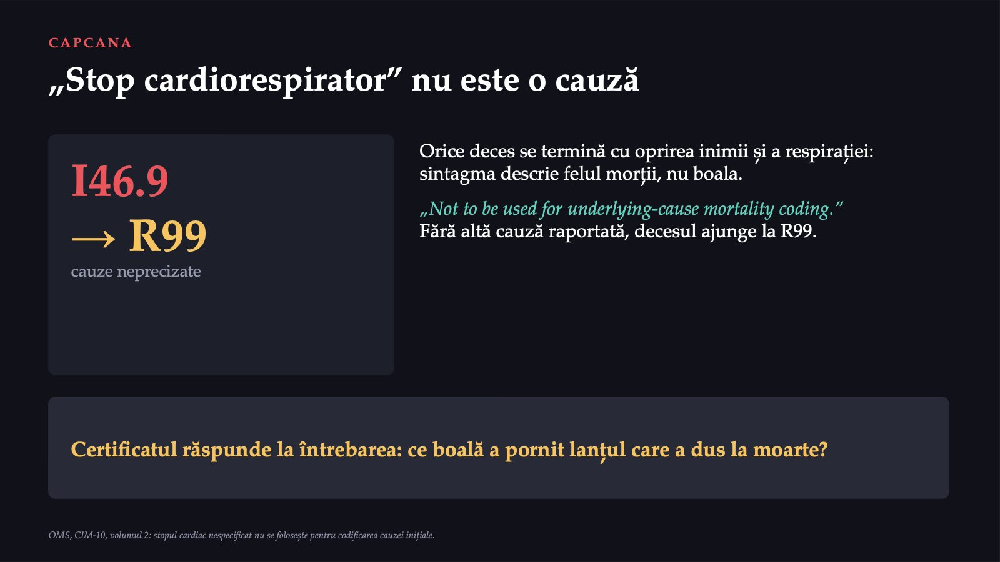
8 / 35Răspunsul apare după ședință
Răspunsul apare după ședință
Formularele tipizate românești
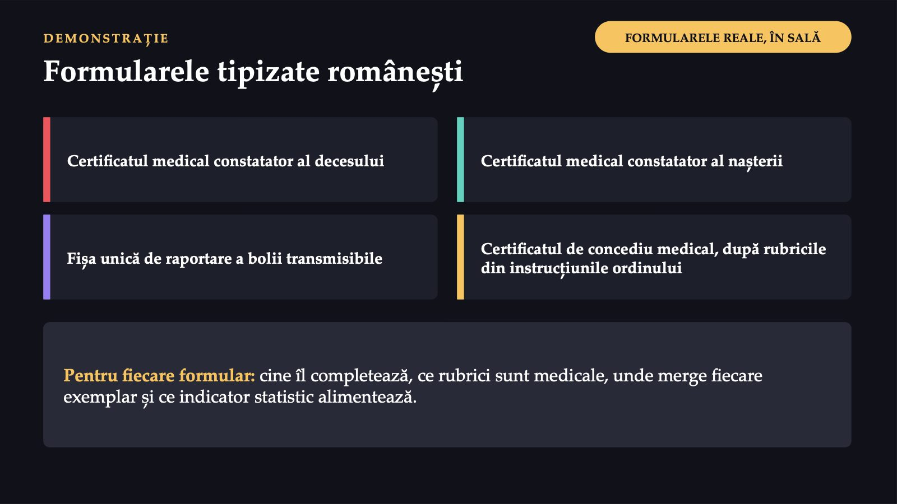
10 / 35Certificatul de concediu medical
![AL DOILEA DOCUMENT AL DIMINEȚII Certificatul de concediu medical Fiica, cu o pneumonie acută. Formular cu regim special, care constituie ordin de plată. Tipul. Inițial sau în continuare: „în continuare” prelungește un concediu neîntrerupt, pentru aceeași afecțiune. Luna. Nu depășește luna în curs; zilele din luna următoare, pe un certificat nou, în continuare. Diagnosticul. Codul după CIM-10, cu forma clinică: acut, subacut sau cronic. Indemnizația. Codul ei, în cifre și litere, după specificațiile de pe versoul certificatului. Ordinul MS/CNAS nr. 1192/745/2020, anexa nr. 2; 3 exemplare.](diapozitive/LP04/011.jpg) 11 / 35
11 / 3555%
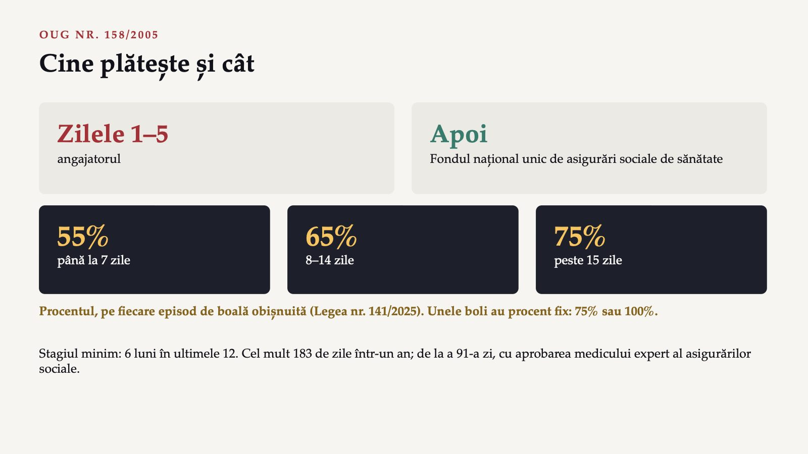
12 / 35Certificatul de deces și concediul fiicei
![FIȘA DE LUCRU 4 · INDIVIDUAL, ÎN FORMS PAȘII 1 ȘI 2 Certificatul de deces și concediul fiicei 1 Rescrieți partea medicală a certificatului cu „stop cardiorespirator”: lanțul, intervalele, cauza terminală, punctul de plecare. 2 Pneumonie acută, boală obișnuită: 5 zile, apoi încă 2, neîntrerupt, în aceeași lună. Tipul certificatului, plătitorul, procentul. [QR FORMULAR] [linkul scurt] Rubricile formularului românesc: în spațiul rezervat, de pe formularele arătate în sală. Răspundeți pe telefon, la codul afișat.](diapozitive/LP04/013.jpg) 13 / 35
13 / 3512,0%
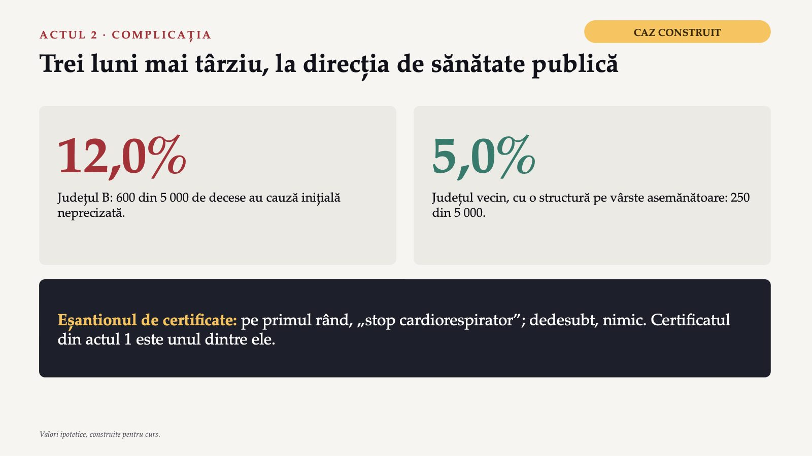
14 / 35Drumul cauzei de deces
![DE LA FORMULAR LA STATISTICĂ Drumul cauzei de deces Medicul rubrica medicală a certificatului → Starea civilă actul de deces → Buletinul statistic de deces transmis electronic → INS mortalitatea pe cauze Proporția mare a simptomelor și semnelor „indicates a need to check or estimate the quality of the tabulated data”. Fiecare deces trecut la cauze neprecizate lipsește din rândul bolii care l-a produs: mortalitatea cardiovasculară a județului apare mai mică decât este. Legea nr. 119/1996 (buletinele statistice, INS); OMS, CIM-10, volumul 2.](diapozitive/LP04/015.jpg) 15 / 35
15 / 35Decizii și condiții, nu vinovați
![CONFERINȚA M&M · CRONOLOGIA Decizii și condiții, nu vinovați Momentul · Cine · Ce a văzut · Ce a decis Luni, 07:40 · medicul de familie · deces acasă, fiica de față, fără violență · constată decesul La eliberarea certificatului · medicul de familie · familia așteaptă; fișa e la cabinet · „stop cardiorespirator”; restul gol În termenul de 3 zile · fiica · certificatul semnat și parafat · declară decesul Săptămânile următoare · starea civilă, codificarea · o sintagmă neacceptată · buletin la INS; cauză neprecizată Trei luni mai târziu · analista DSP · 12,0% față de 5,0% · caută tiparul Valori ipotetice; momente și roluri plauzibile, nu reale.](diapozitive/LP04/016.jpg) 16 / 35
16 / 35Medicul de familie din actul 1 nu a încălcat legea, care cere doar consemnarea cauzei; a completat formularul așa cum îl completează mulți colegi, în condițiile în care l-a completat.
De ce a ajuns pe certificat „stop cardiorespirator”?
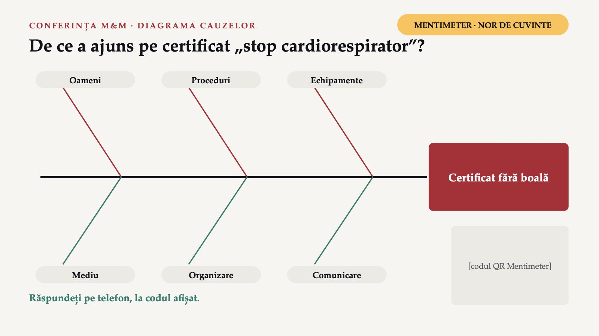
17 / 35O singură cauză: medicul a scris „stop cardiorespirator”
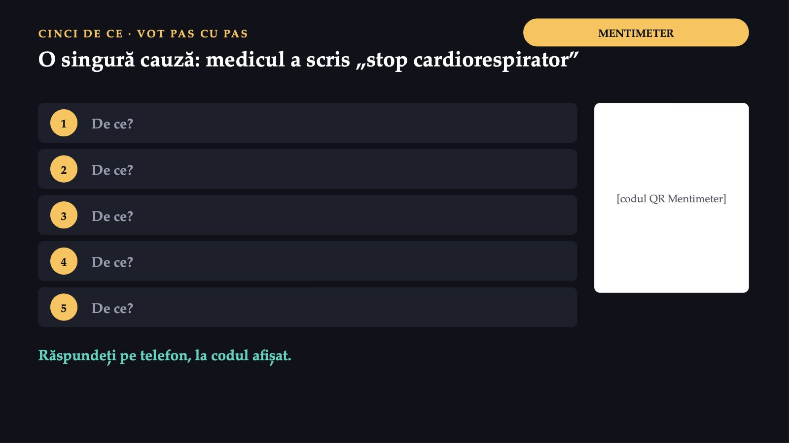
18 / 35Răspunsul apare după ședință
Răspunsul apare după ședință
Răspunsul apare după ședință
Răspunsul apare după ședință
Ce măsură propune direcția de sănătate publică?
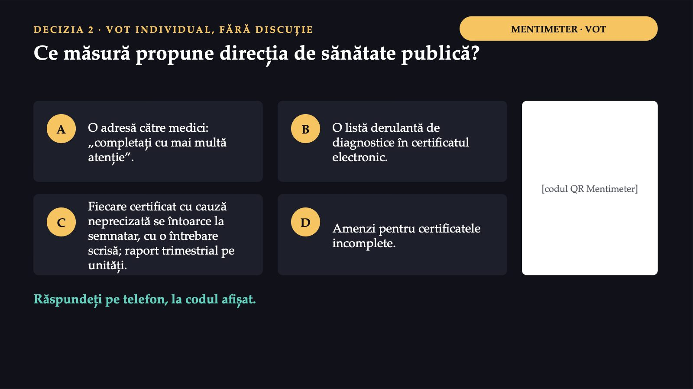
21 / 35Convingeți-l pe cel care a votat altfel. Apoi votați din nou.
22 / 35Răspunsul apare după ședință
Răspunsul apare după ședință
Răspunsul apare după ședință
Răspunsul apare după ședință
Declarați la suspiciune, nu la confirmare
![AL TREILEA FORMULAR · HG NR. 657/2022 Declarați la suspiciune, nu la confirmare Fișa unică de raportare: la direcția de sănătate publică, în cel mult 5 zile de la depistare. Boala marcată „(T)”: imediat, telefonic; apoi fișa, tot în cel mult 5 zile. Sancțiunile: avertisment scris; în termen de un an, 500–1 000 de lei; apoi 2 500–5 000 de lei. Registrul: RUBT, administrat de INSP; datele personale sunt confidențiale. Pasul 3, în formular: nepotul, un copil, caz suspect pentru o boală marcată „(T)”.](diapozitive/LP04/025.jpg) 25 / 35
25 / 3523
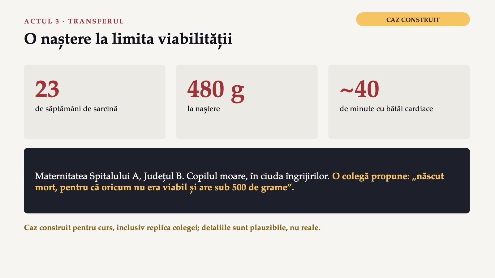
26 / 35Cum se înregistrează nașterea?
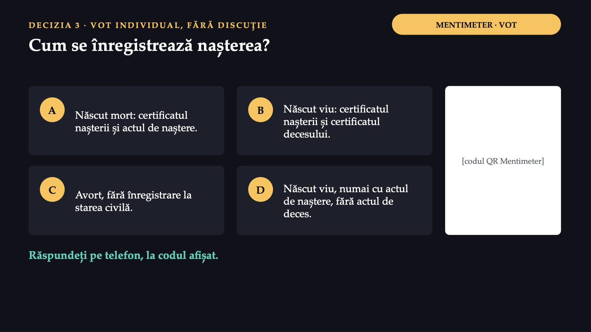
27 / 35Semnele de viață decid, nu greutatea
![DEFINIȚIA OMS ȘI LEGEA STĂRII CIVILE Semnele de viață decid, nu greutatea „irrespective of the duration of the pregnancy, which, after such separation, breathes or shows any other evidence of life” Născut viu Declarare în 30 de zile; dacă moare în acest termen, în 24 de ore de la deces. Născut mort Declarare în 3 zile. Se întocmește numai actul de naștere. Certificatul nașterii Formular-tip: număr de înregistrare, dată certă, semnătura medicului. OMS, CIM-10, volumul 2; Legea nr. 119/1996; HG nr. 255/2024.](diapozitive/LP04/028.jpg) 28 / 35
28 / 35Răspunsul apare după ședință
Răspunsul apare după ședință
Același tip de deces, numitori diferiți
![INDICATORII · LA 1 000 Același tip de deces, numitori diferiți Mortalitatea infantilă decese sub 1 an ÷ născuți vii × 1 000 Mortalitatea perinatală (decese fetale + decese neonatale precoce) ÷ (născuți vii + născuți morți) × 1 000 Neonatală: primele 28 de zile complete; neonatală precoce: primele 7 zile. Postneonatală: mortalitatea infantilă minus cea neonatală. Perioada perinatală: de la 22 de săptămâni complete (de obicei 500 g) la 7 zile după naștere. Ordinea criteriilor: greutatea, vârsta gestațională, lungimea vertex–călcâi.](diapozitive/LP04/030.jpg) 30 / 35
30 / 35Indicatorii Județului B
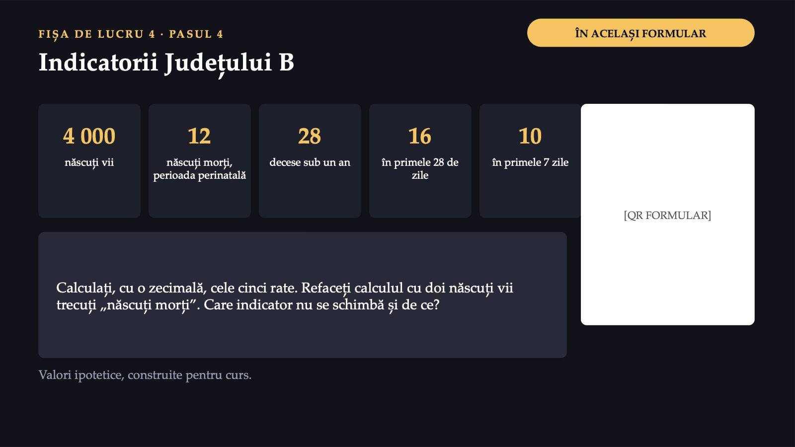
31 / 35Răspunsul apare după ședință
Răspunsul apare după ședință
Rezolvarea se vede în formularul fișei, după ce o predați.
Rezolvarea se vede în formularul fișei, după ce o predați.
Trei gesturi, trei formulare
![CE FACEȚI DIFERIT LUNI DIMINEAȚĂ Trei gesturi, trei formulare 1 La primul certificat de deces: boala care a pornit lanțul, pe ultimul rând folosit al părții I; niciodată „stop cardiorespirator” singur. 2 La primul copil născut cu semne de viață, oricât de mic: certificatul nașterii și, dacă moare, certificatul decesului. 3 La primul caz suspect dintr-o boală care se declară: nu așteptați laboratorul. Fiecare formular completat azi va fi, într-o zi, o cifră într-un tabel pe care altcineva îl folosește pentru a decide unde merg banii și oamenii.](diapozitive/LP04/034.jpg) 34 / 35
34 / 35Trei întrebări pentru final
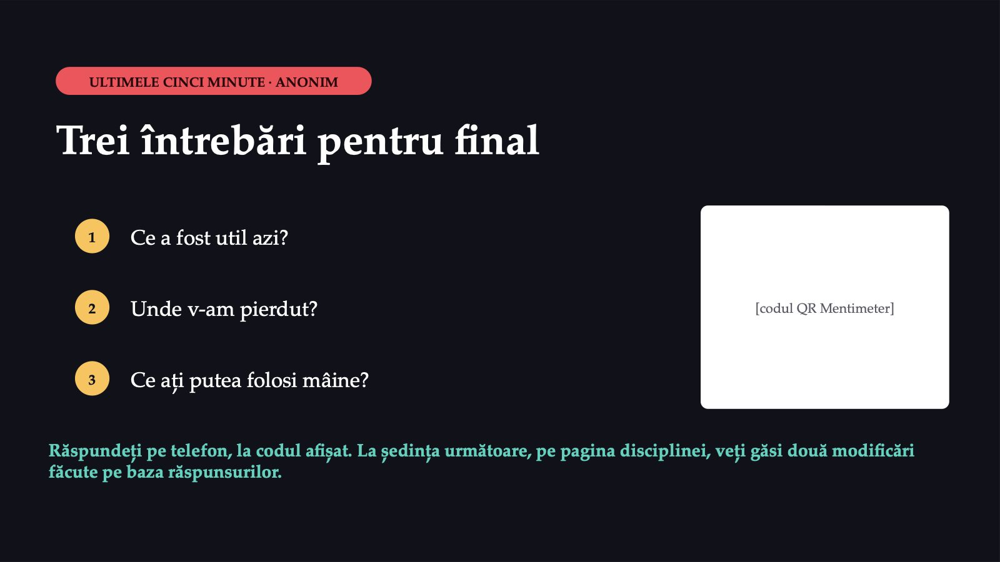
35 / 35Săgeți sau spațiu: navigare · O: vedere de ansamblu · N: notele prezentatorului · F: ecran complet · Esc: închidere